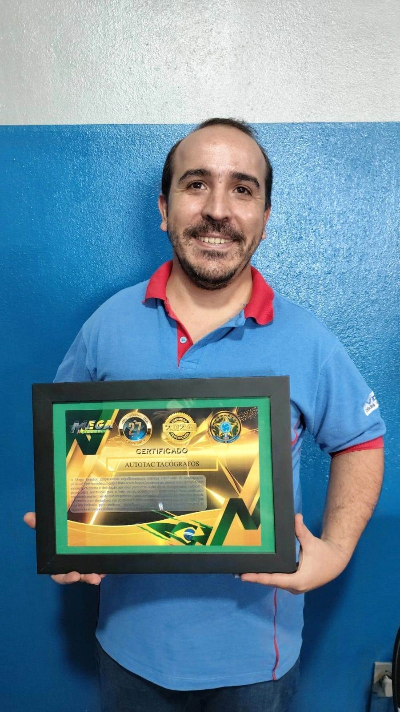

Central de atendimento
Autotac Uberaba
Endereco
Rua Arlindo de Melo, 1493
Busca frequente
Tacografo, afericao, posto de ensaio e Inmetro
Uberaba MG | Posto autorizado VDO Premium
A Autotac esta ha mais de 10 anos no mercado atendendo caminhoneiros, frotistas, empresas e profissionais que precisam manter o tacografo regularizado, funcionando bem e pronto para rodar com seguranca.
Central de atendimento
Autotac UberabaO que a Autotac resolve
Atendimento focado em diagnostico rapido, execucao correta e suporte para clientes que precisam voltar a operar sem improviso.
Posto de ensaio com estrutura adequada
Para quem precisa manter documentacao e equipamento em ordem, a Autotac oferece afericao com equipe qualificada, processo organizado e excelente custo-beneficio.
Condicao competitiva para quem busca economia sem abrir mao da precisao no servico.
Processos executados com foco no desempenho do equipamento e na confiabilidade da afericao.
Suporte para quem roda com um veiculo ou administra varios equipamentos.
Correcoes e diagnostico
A Autotac trabalha com manutencao em geral para recuperar o funcionamento do tacografo e orientar a melhor solucao para cada caso.
Equipe preparada para analisar o defeito e agir com seguranca tecnica.
Fluxo pensado para reduzir o tempo de espera e devolver o equipamento em condicao de uso.
Falhas de funcionamento, revisao, ajuste e manutencao preventiva ou corretiva.
Amplitude de atendimento
Quem procura resolver em um so lugar encontra na Autotac estrutura para trabalhar com diferentes configuracoes de tacografos e necessidades de reposicao.
Atendimento amplo para equipamentos variados, com orientacao para a demanda certa.
Mais praticidade para quem quer alinhar manutencao e substituicao no mesmo contato.
Fale com a equipe, explique o modelo e receba uma orientacao objetiva pelo WhatsApp.
Diferenciais da operacao
A Autotac cresceu com foco em especializacao. Isso significa equipamentos adequados, conhecimento tecnico e uma rotina preparada para atender desde a afericao ate a manutencao.
Mais seguranca para quem valoriza padrao tecnico e procedencia no atendimento.
Mercado, rotina e conhecimento acumulado para orientar o cliente com mais precisao.
Base em Uberaba com alcance comercial para clientes que buscam suporte especializado.

Reconhecimento
Empresa lembrada pela qualificacao e pelo atendimento tecnico no segmento.Confianca que se construiu no mercado
O cliente que chega ate a Autotac encontra um posto autorizado com experiencia, equipe qualificada e foco total em resolver o problema com clareza, sem enrolacao e com orientacao objetiva.
Equipe acostumada com a rotina do setor automotivo e com as exigencias do tacografo.
Mais de 10 anos de mercado reforcando reputacao e conhecimento pratico.
Fale pelo WhatsApp, descreva a necessidade e receba uma orientacao rapida.
Localizacao que ajuda a atender a regiao e fortalecer a presenca nacional da empresa.
Como funciona
Envie mensagem, ligue ou chame no Instagram para explicar o que precisa.
A equipe direciona melhor o atendimento para afericao, manutencao ou pecas.
Mais clareza para decidir e colocar o equipamento em ordem com rapidez.
Atendimento comercial
Uberaba MG para clientes da regiao e de todo o Brasil.Perguntas frequentes
Afericao, manutencao e pecas para tacografos em geral, com atendimento para diferentes marcas e modelos.
A base da Autotac fica em Uberaba MG, mas a empresa informa atendimento comercial para clientes de todo o Brasil.
Segunda a sexta das 07:30 as 17:30, sabado das 07:30 as 11:30 e domingo fechado.
Contato direto